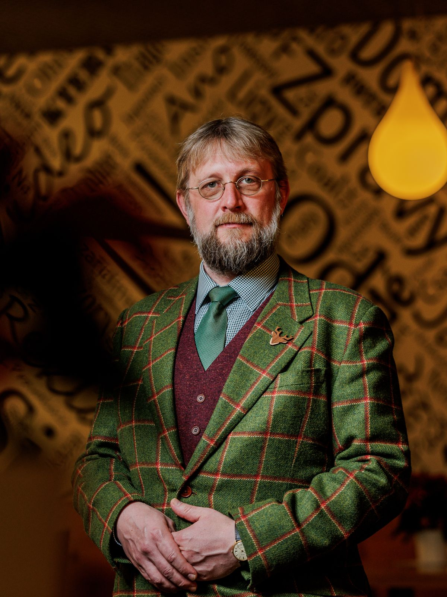

Nový příspěvek 1× měsíčně
Rozbor jednoho konkrétního tématu z praxe a diskuse k němu.
Připravovaný projekt
Připravuji nový odborný web věnovaný bezpečnosti všech technických zařízení, normám a legislativě s ohledem na odpovědnosti provozovatelů, práci revizních techniků, činnosti osob odborně způsobilých v BOZP, povinnosti montážních a dodavatelských společností.
Přístup ke kompletnímu obsahu by stál 750 Kč měsíčně.
Žádné předčítání norem. Praktický výklad toho, co norma či předpis požaduje, koho se týká a kdo za co odpovídá.

„Ptejte se. Odpovídám z praxe, ne z paragrafů.“
Konzultant technické bezpečnosti, třetí dekádu v praxi
Naučný a komunikační web, ne podcast
Rozbor jednoho konkrétního tématu z praxe a diskuse k němu.
Vaše otázky a moje odpovědi v přímém přenosu.
Zkušenosti z praxe i pohled těch, kdo dodržování předpisů kontrolují.
Všechny výklady, rozhovory a odpovědi na jednom místě – ke čtení, případně i k poslechu.
Podílejte se i vy na tomto projektu – vaše dotazy, zkušenosti a problémy z praxe budou určovat témata, kterým se budeme věnovat.
Nechte mi na sebe kontakt na webu – k ničemu se nezavazujete. Pokud bude o tento formát zájem, spustím ho od ledna 2027.
Naskenujte QR kód a klikněte na „Budu mít zájem“ – zabere to necelou minutu.
www.technickabezpecnost.cz
Naskenujte telefonem